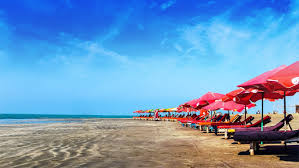
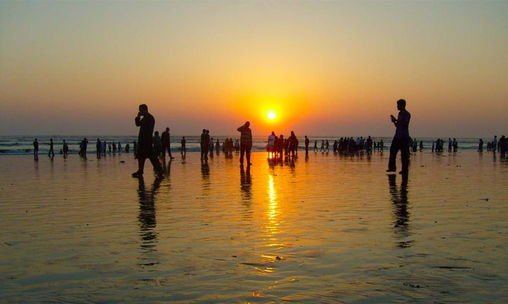

Cox's Bazar is famous for having the world's longest natural sea beach. It attracts millions of visitors every year.
Tourists enjoy the sunrise, sunset, fresh seafood and nearby attractions such as Himchari and Inani Beach.


